Staying Active, Staying Connected
Staying active doesn’t always have to mean exercising. Sometimes, it means continuing to participate in the activities and communities that matter to us.
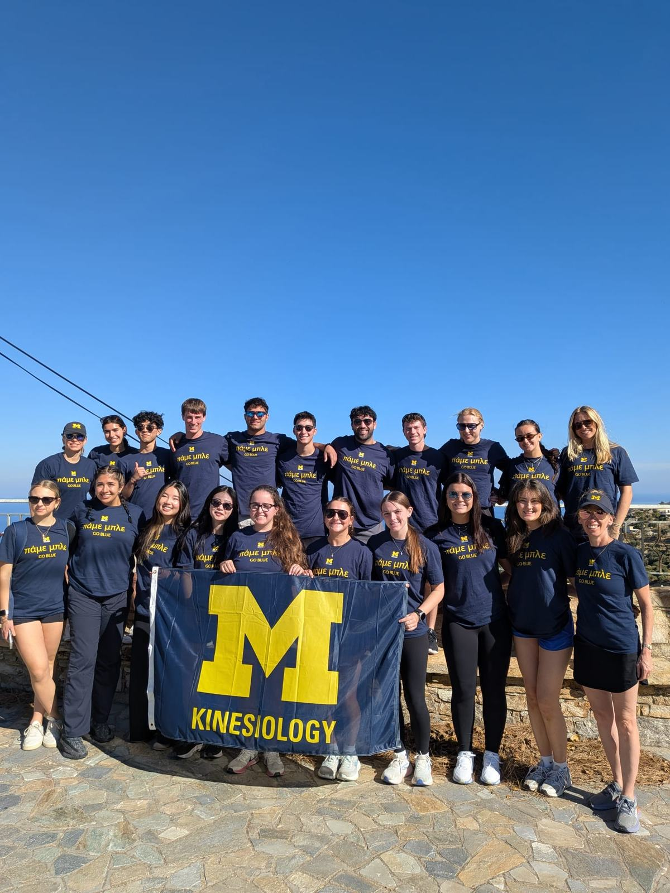
One of our activities in Ikaria involved participating in a community service project to help maintain the island’s hiking trails. Our group worked together to install trail signs, clear overgrown paths, and cut down trees and branches that were obstructing the trails.
What made the experience particularly memorable was working alongside the president who helped lead the project. I was impressed by how self-sufficient, independent, and determined he was. Despite being much older than us, he consistently walked ahead of our group and encouraged us to keep up. Even though he couldn’t speak English, he enthusiastically shouted “Bravo!” whenever we completed something correctly. His energy and determination were especially memorable because he seemed to have no intention of slowing down for us.
I was also surprised by how actively he participated in the manual labor. He was right there with us, cutting down trees and clearing the paths rather than simply supervising our work. In my experience, people in leadership positions often delegate the more physically demanding tasks to others, so seeing him take on the same work as everyone else stood out to me. He seemed genuinely humble and down to earth, and his willingness to get his hands dirty made me respect him even more.
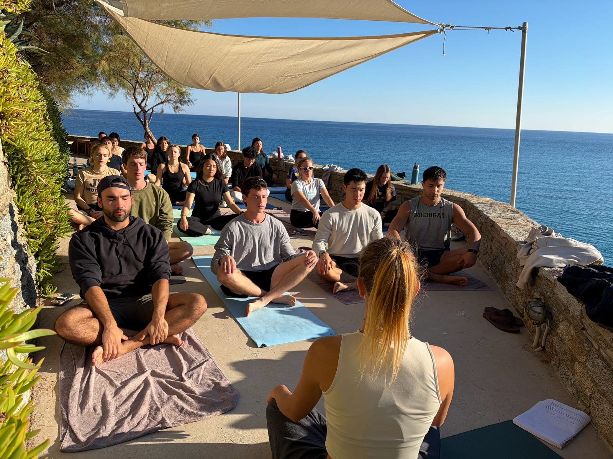
Later that day, we participated in traditional Ikarian dancing at Thea’s restaurant. What I particularly enjoyed was how spontaneously people joined in. Some of the locals who happened to be eating at the restaurant got up and danced with us, and the woman whose home we had visited the previous day even came with her husband to join in. Even though many of us foreigners were not the most coordinated, everyone danced together. It was fun to see how easily people who barely knew one another could come together through a shared activity.
Although installing trail signs and dancing might seem like two completely different activities, I noticed that they shared something important. Both involved movement, social interaction, and participation in the community. Neither felt like physical activity for the sake of physical activity.
Looking back, I think this was one of the first times I began to appreciate how staying active and staying socially connected could happen simultaneously. Rather than treating exercise and socialization as separate responsibilities, these experiences showed me how both could be incorporated into activities people genuinely enjoy.
This experience made me think about how physical activity can take different forms as people age. In the United States, I often hear about the importance of exercising regularly to maintain health and mobility. While structured exercise is certainly beneficial, our community service experience reminded me that staying active can also happen naturally through activities that serve a purpose. The focus wasn’t on exercising. It was on contributing something useful to the community.
Staying active doesn’t always have to mean exercising. Sometimes, it means continuing to participate in the activities and communities that matter to us.
Photographs from the experiences and people behind this reflection.
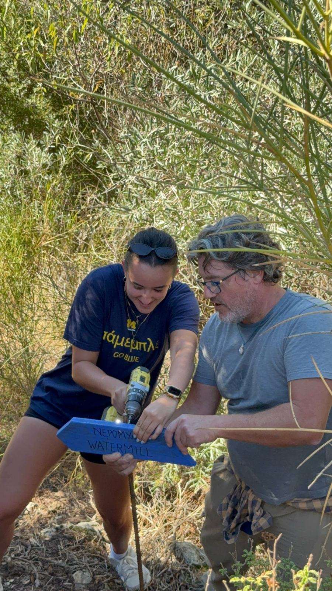
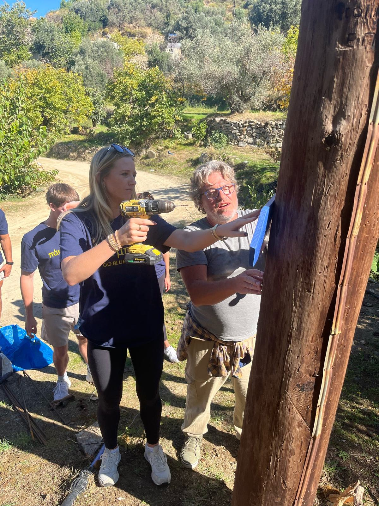
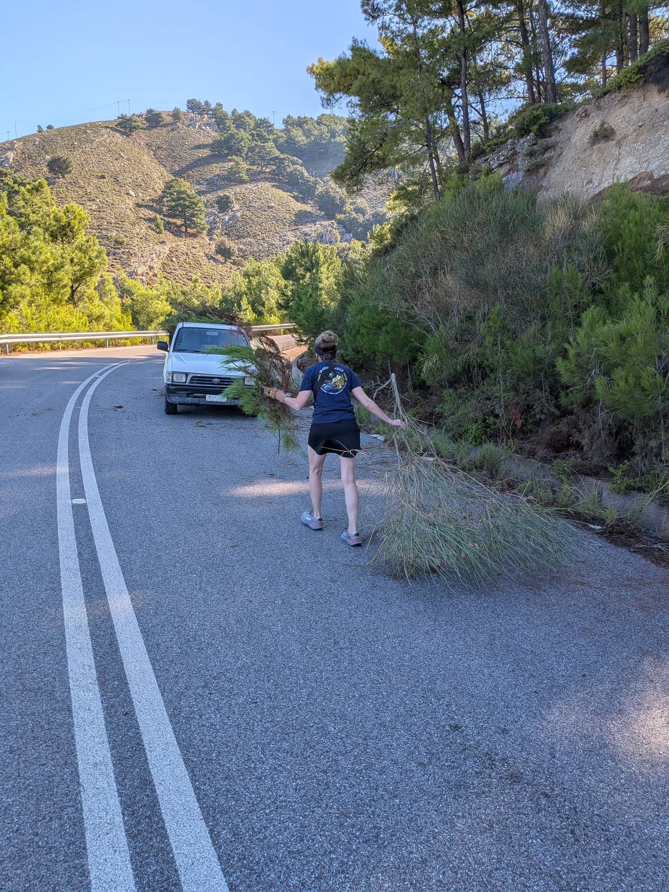
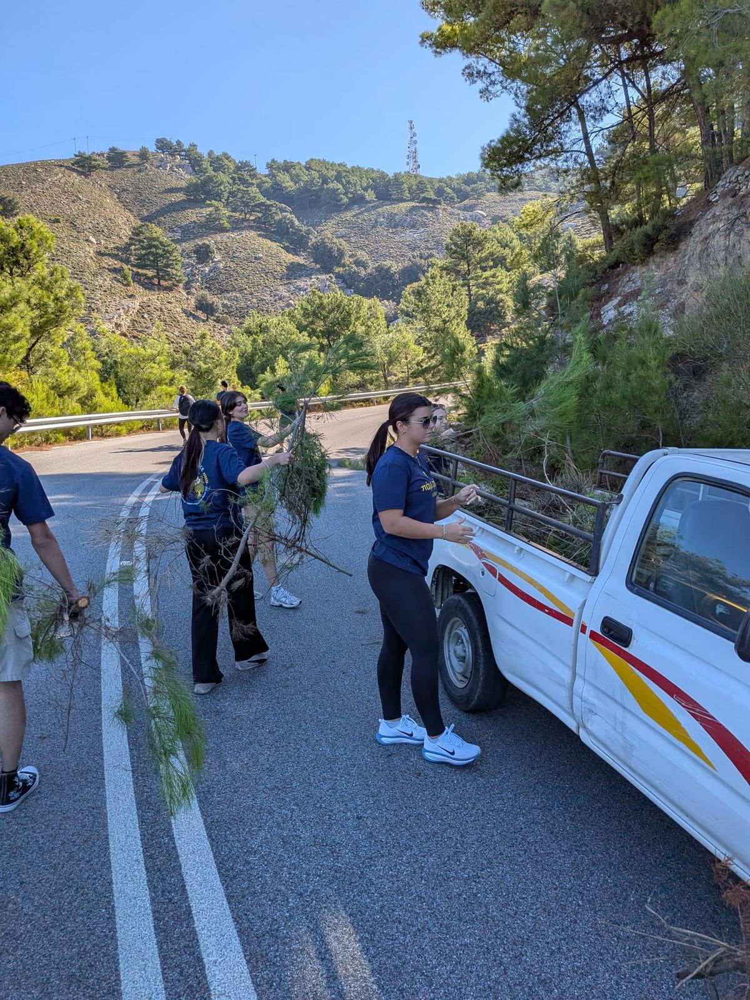
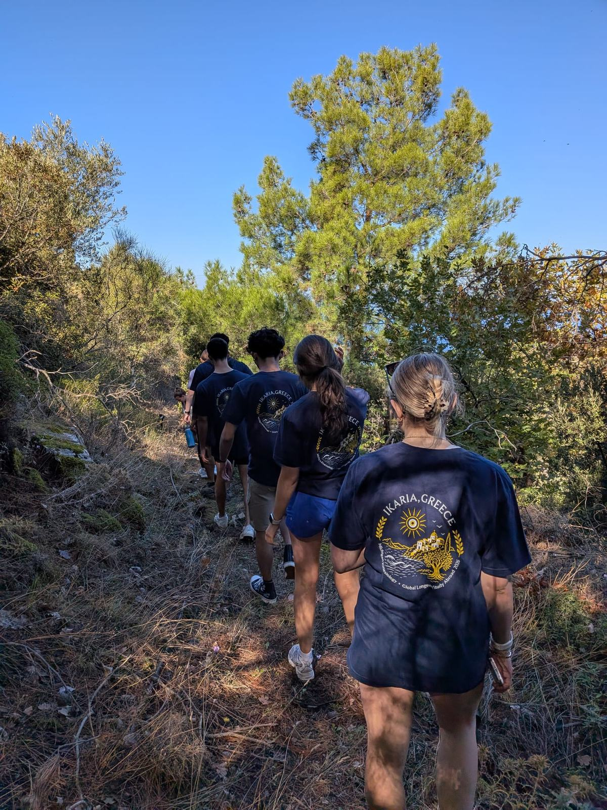
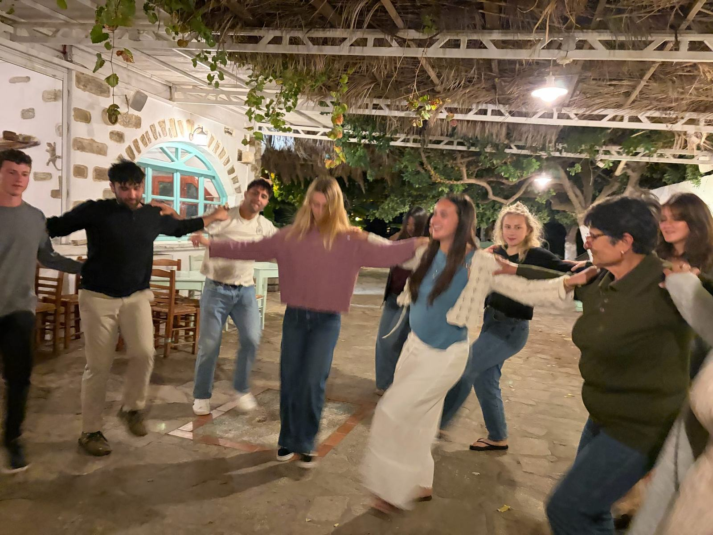
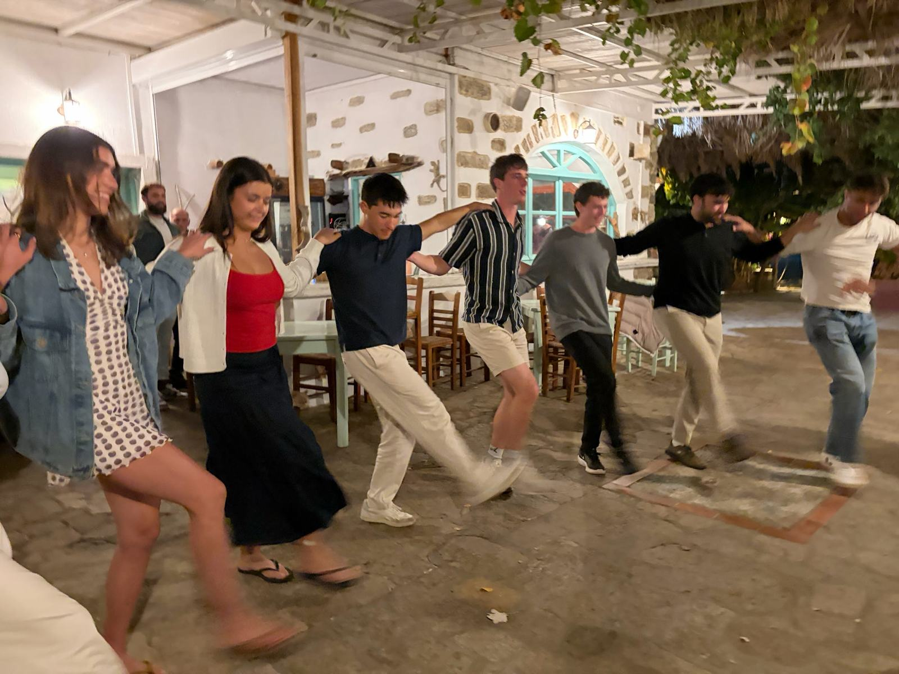
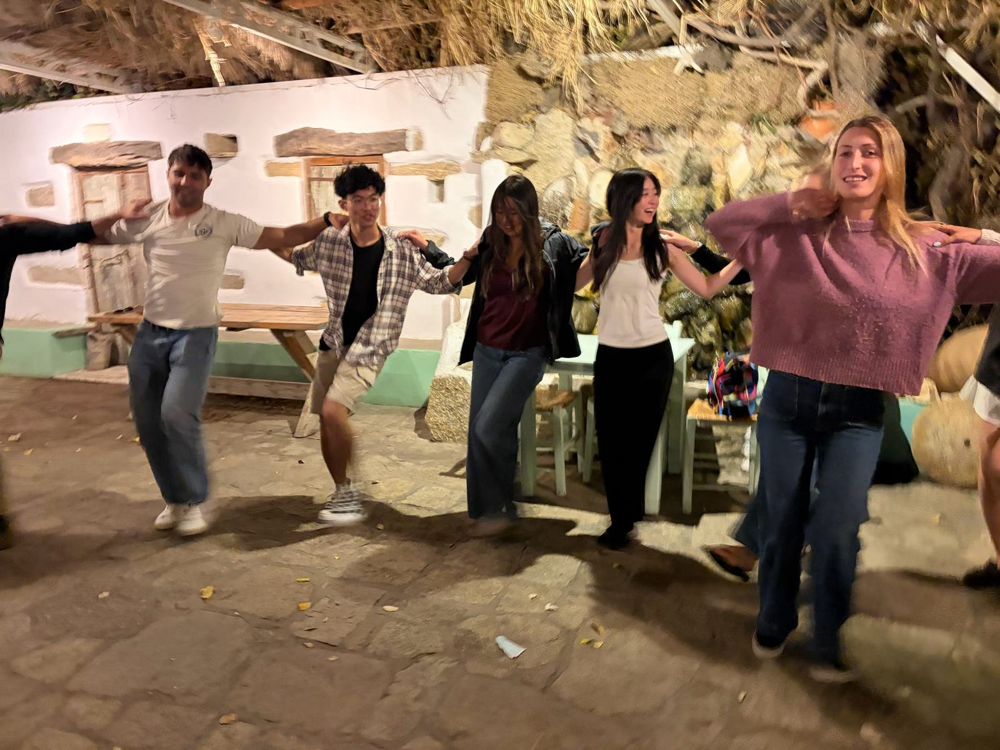
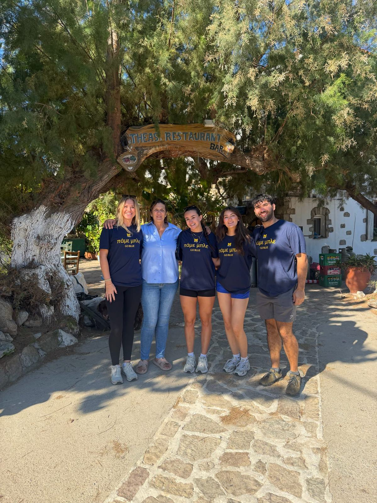